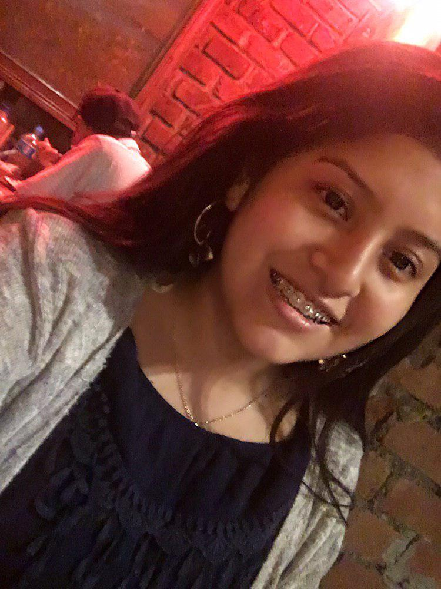

Desinformación de los medios de comunicación
José Valdivia Guzman
José Valdivia Guzman
Mi nombre es José Valdivia Guzmán, tengo 19 años y nací en Lima. A inicios del 2019 comencé a estudiar la carrera Ciencias de la Computación en la UPC (Universidad Peruana de Ciencias Aplicadas). Actualmente , disfruto de investigar sobre la inteligencia artificial para saber cómo funciona y así crear mi propia versión. También , me considero una persona parcialmente atenta, amable y dispuesto a ser de ayuda. Elegí explicar el problema de la desinformación en los medios de comunicación , porque estos mismos - radio, noticieros, periódicos, etc.- en ciertos casos y por intereses particulares transforman la información o mensaje que una persona recibe, pues esto representa un daño a la población que usan los medios visuales que respecto a lo que deberían de saber ya que según Roberto Rodríguez Andrés, el usar mentiras para controlar a la población cuando se realizan interacciones o relaciones con entidades externas del Estado se hace desde hace tiempo en la política . Esto es un enorme problema porque si el Estado o personajes importantes crean o dicen información errada y que además ocurre una problemática perjudicial, la población no estaría enterada sobre lo que sucede. Entonces podemos ver el caso de la empresa minera Yanacocha y la familia Chaupe Acuña en un artículo del diario El país de España, en el que supuestamente la seguridad de la empresa minera habría agredido a la Sra . Chaupe al defender sus sembríos. Debido a esta situación la Sra. fue tomada como una heroína e igualar su situación a la de la activista hondureña Berta Cacéres. Por eso, esto fue desacreditado por el mismo diario pues se estaba creando una heroína a base de mentiras e información falsa. De este modo , mediante nuestro boletín, te incitamos a investigar sobre la veracidad de lo que consideras verdadero o no.
Brenda Stefani Garcia Alvarez

Mi nombre es Brenda Stefani Garcia Alvarez, tengo 17 años. Actualmente estudio en la Universidad Peruana de Ciencias Aplicadas (UPC), elegí la carrera de comunicación e imagen empresarial, ya que debido a mi familia las comunicaciones han sido parte de mi vida, siempre me ha gustado dar mi opinión, aprender de los demás y una de mis grandes aspiraciones es aportar ideas positivas en la Sociedad. Por esta razón abordaré el problema sobre la” Desinformación en los medios de comunicación”, en estos años se ha observado en el Perú que lamentablemente nuestros medios de comunicación no transmiten la realidad del país solo dan a conocer temas irrelevantes seleccionando la información en beneficio de algunos, utiliza distractores como los programas basura e indigna como desinforman a la población con noticias incompletas o noticias sin mayor análisis. Un claro ejemplo es el reportaje que ha emitido el canal ATV titulado “Los mitos y las verdades acerca del Autismo”. Basándome en la información (Valera, 2019) afirma: “el nulo respeto por las personas autistas y la inmensa cantidad de desinformación ofrecida por tal medio en tan poco tiempo”. La información brindada en este reportaje me causa indignación y preocupación. Ya que un medio tan importante no se toma la molestia de investigar para su público televidente. Muy aparte de ello esta desinformación causa incertidumbre en la población e ignorancia. Personalmente creo que un país bien informado es un país con futuro y toma mejores decisiones, para concluir quiero sensibilizar a las personas a seleccionar e investigar la información recibida por los medios de comunicación.